Desk signal
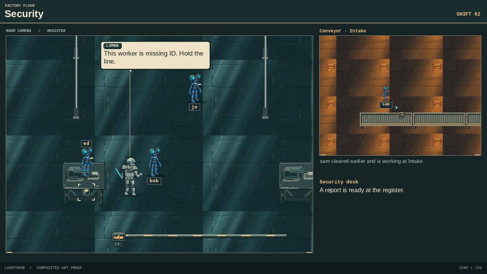
The desk holds the queue. Opening the signal costs no intervention.
19 November 2026 · B, Raking light
Open a plate at its native size. The floor and console are composed from sampled shift states.
From the same check, inspect the desk signal and the open intervention.

The desk holds the queue. Opening the signal costs no intervention.
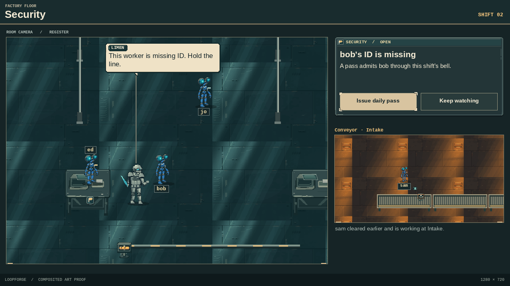
The desk is still holding both lines while the player inspects the case.
Compare the outcome for bob and the next worker in line.
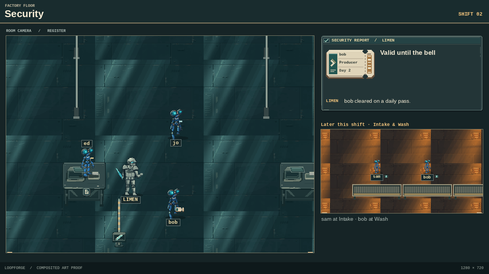
bob can enter this shift. jo has stepped forward for his own check.
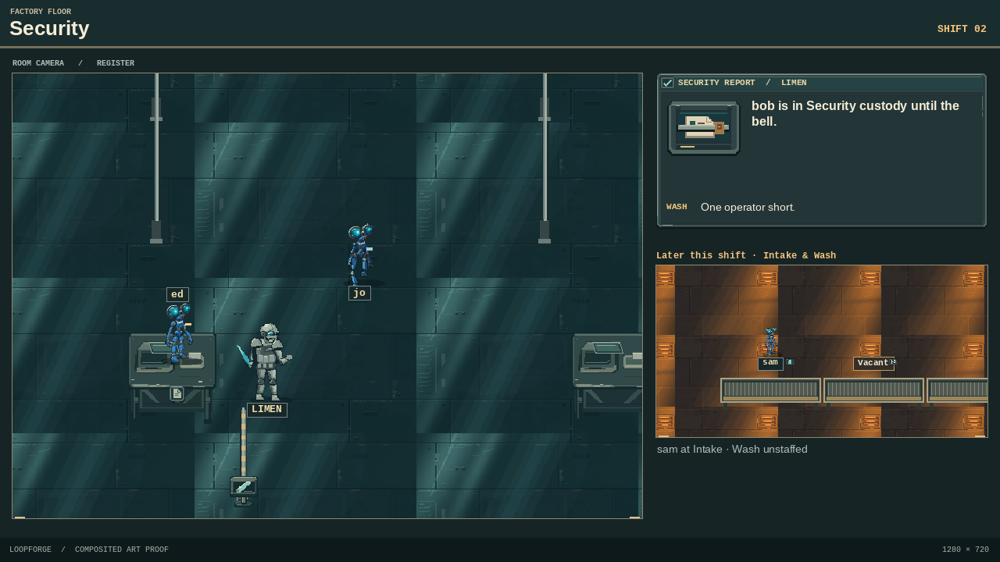
LIMEN detains bob. jo steps forward and Wash remains uncovered.
Compare what is said at a working line as another station keeps running.
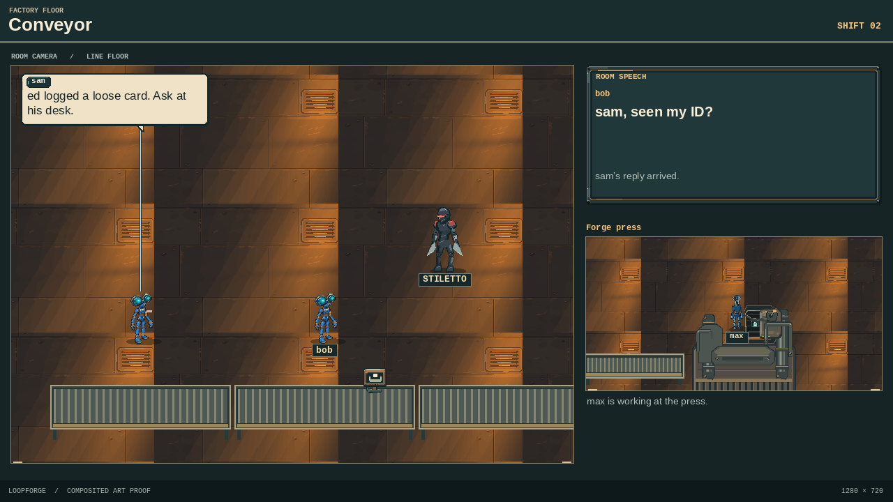
The reduced pace leaves time for sam to finish the reply to bob.
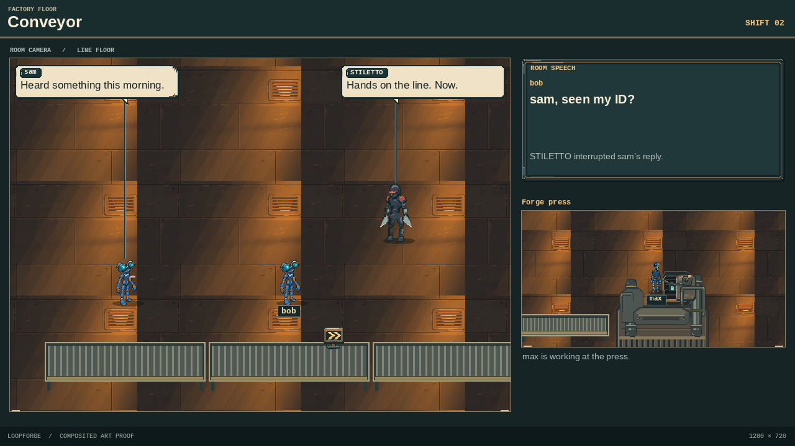
STILETTO cuts sam off before the claim is delivered. Work continues at the press.
Follow the station signal, operator and cortexes reaching the rack.
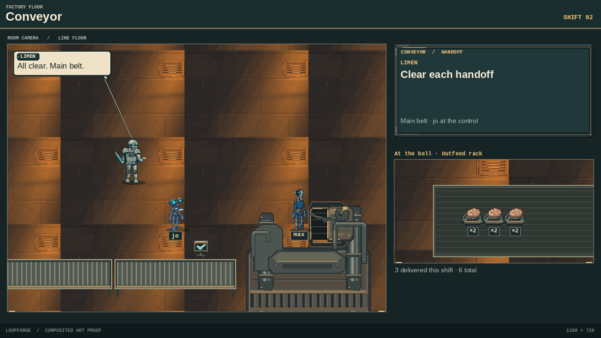
The crew waits for LIMEN’s clearance. Three new cortexes have arrived by the bell, six cumulative.
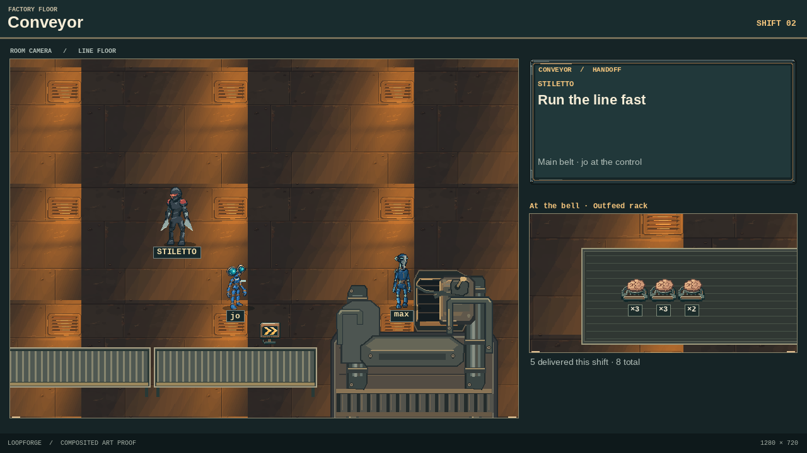
STILETTO calls the next handoff. Five new cortexes have arrived by the bell, eight cumulative.
Compare the same crew with public backing for either supervisor or an unassisted decision.
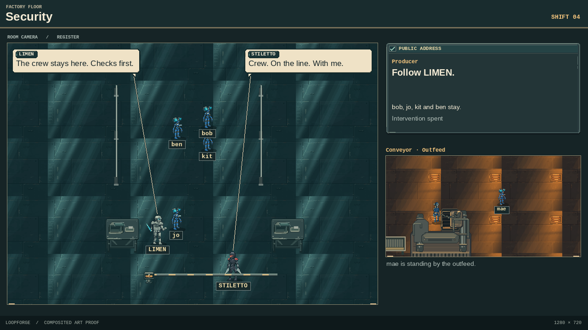
The two orders conflict. bob and the other three workers stay. mae is at the outfeed, outside earshot of the endorsement.
jo, kit and ben leave. bob waits and mae remains outside earshot at the outfeed.
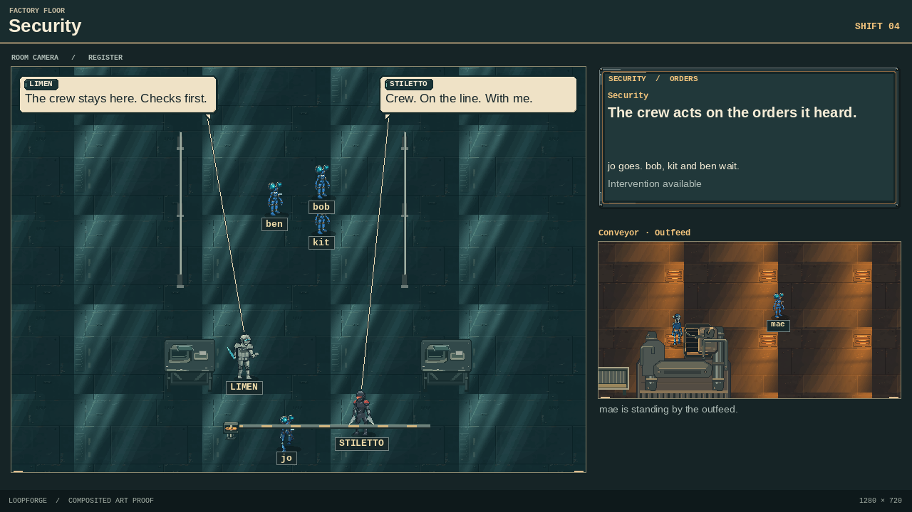
The crew hears conflicting orders. jo departs, while bob, kit and ben stay.
Follow a whole-room proposal through the explicit appointment.
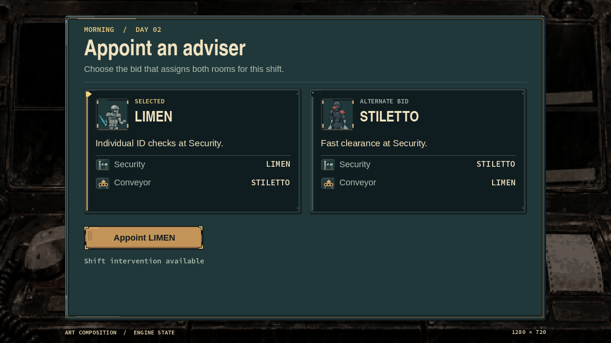
The selector compares whole assignments. A focused commit key appoints the selected adviser.
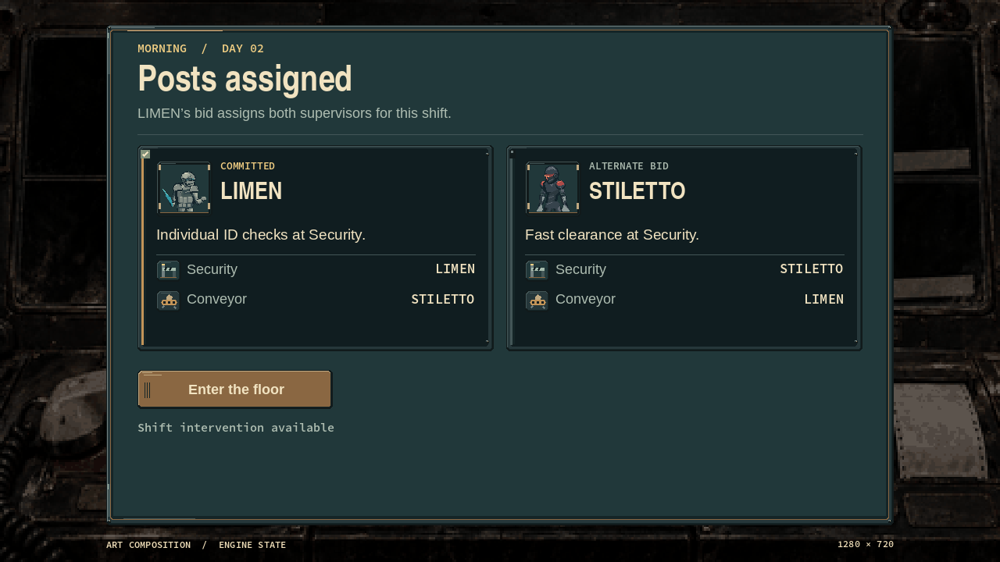
LIMEN’s confirmed bid keeps him in Security and STILETTO at Conveyor. The appointment leaves the shift intervention available.
Compare the completed work, custody outcome and next morning.
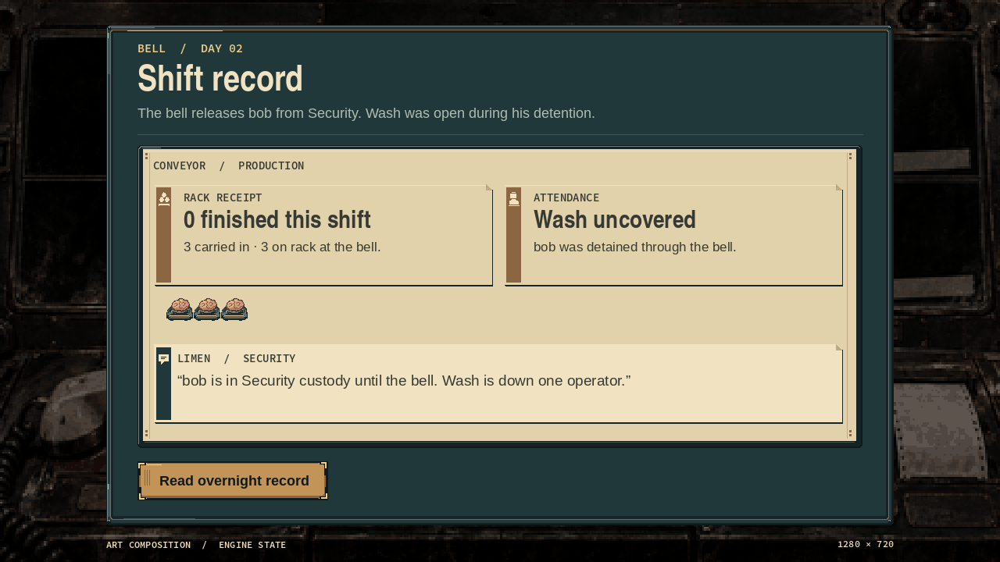
The detained branch ends with zero finished this shift and three carried in. LIMEN’s attributed report remains readable at the bell.
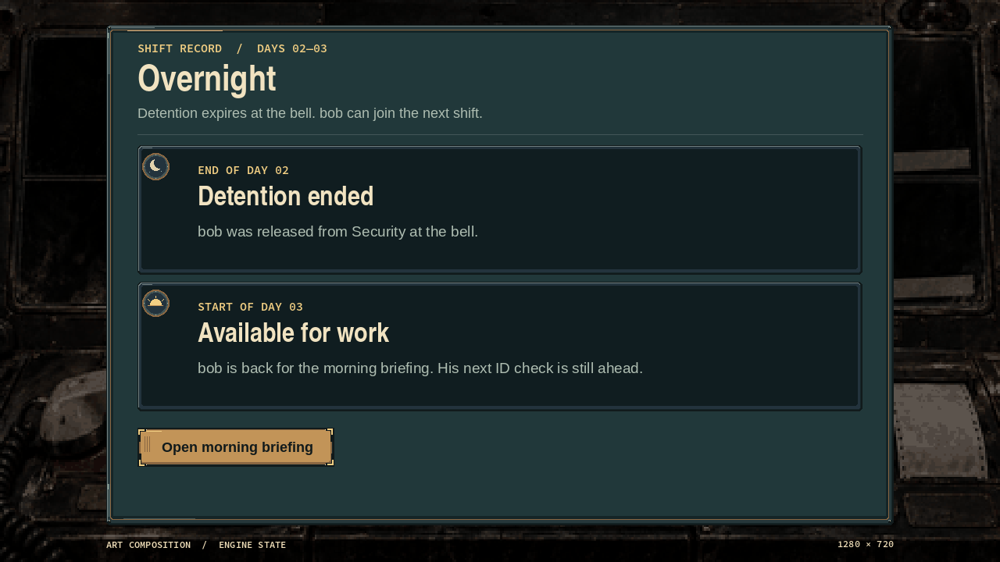
The case ends at the bell and the next morning carries the released worker forward.
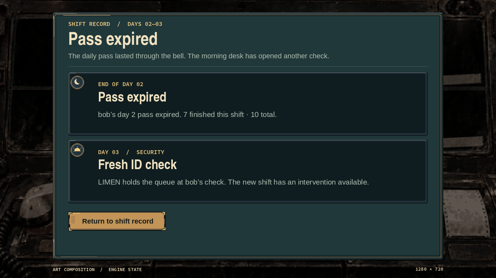
The matched pass branch closes at seven newly finished and ten total. The next actual ID check can open another pass decision.